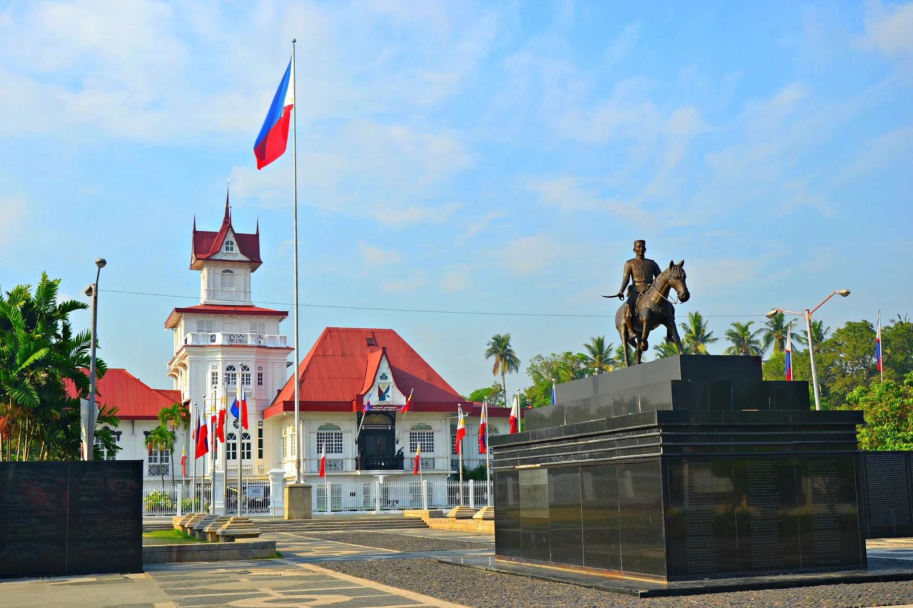
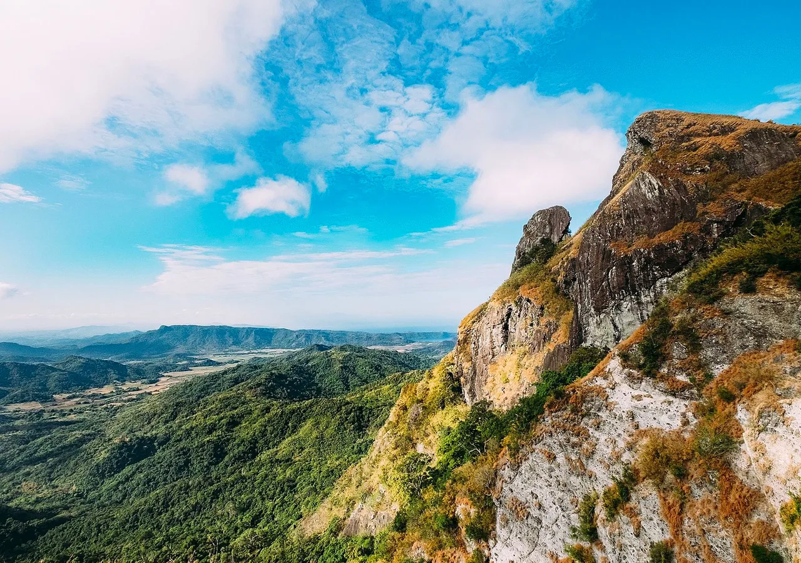
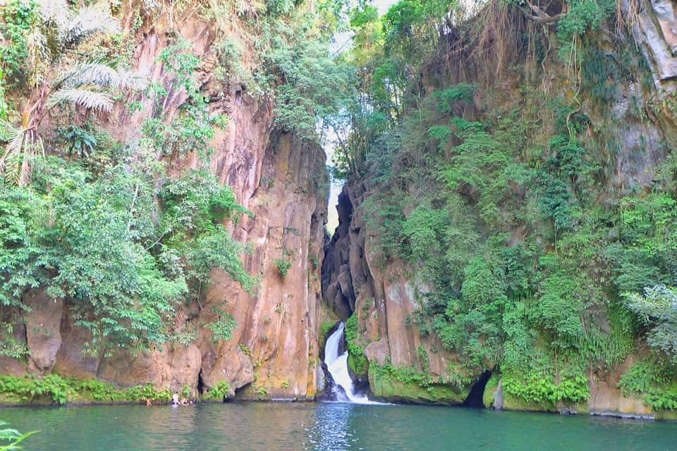
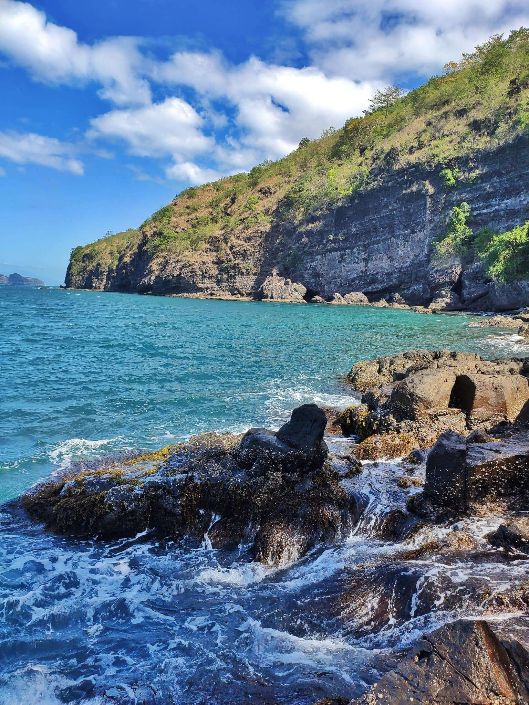
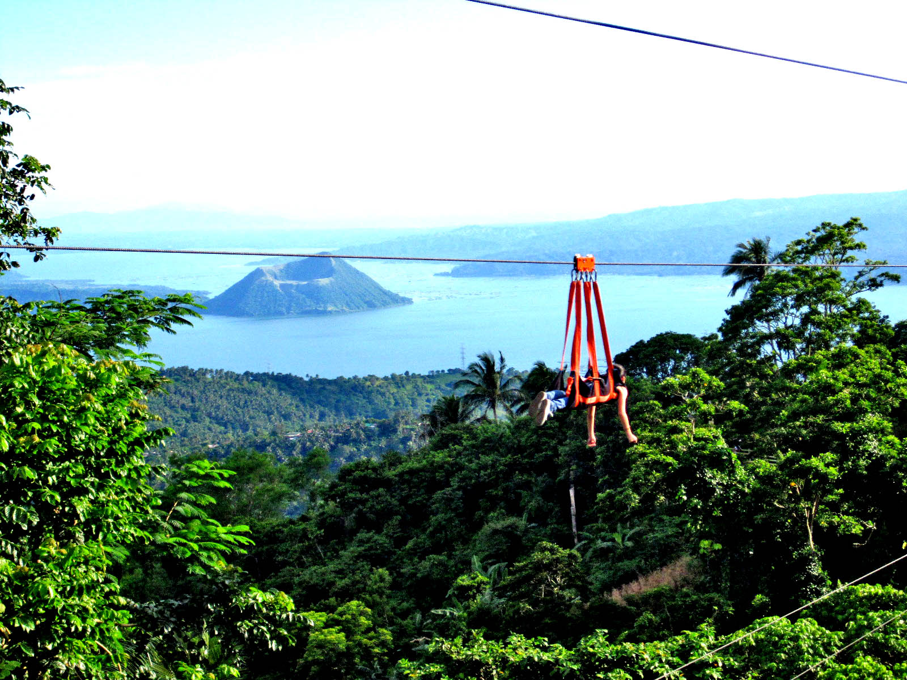
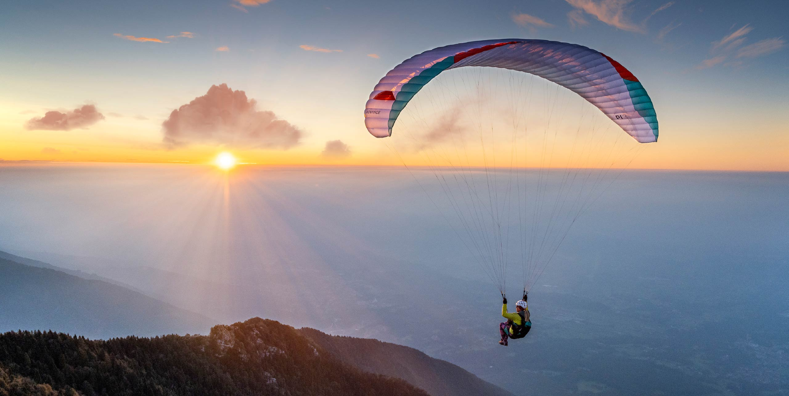
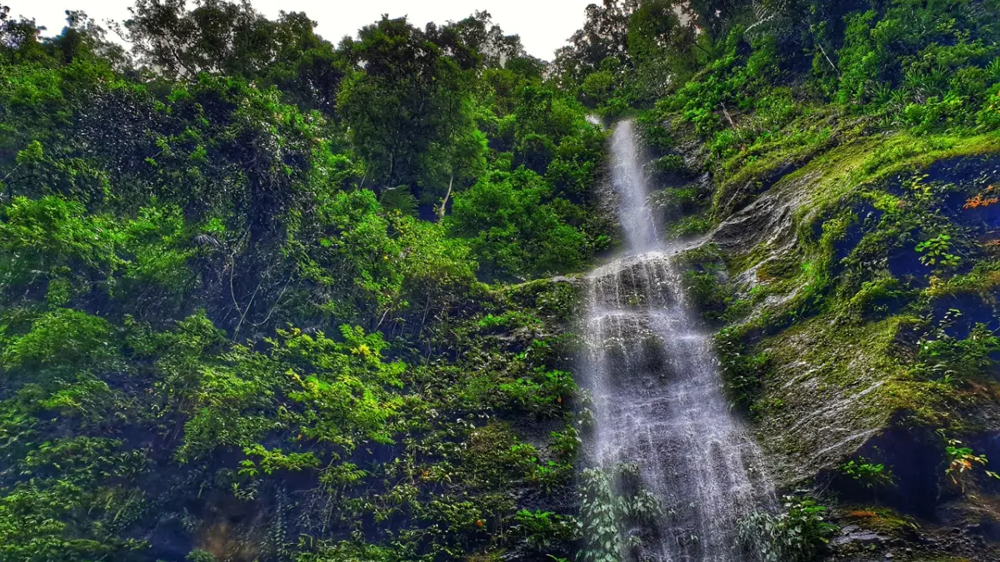

If you are looking for a destination that perfectly combines history, nature, and leisure, then visiting Cavite should definitely be on your travel list. Just a few hours away from the busy metro, Cavite offers a refreshing escape where you can enjoy the cool climate and stunning panoramic views in Tagaytay, especially the breathtaking sight of the world-famous Taal Volcano surrounded by a serene lake. Beyond its natural beauty, the province is deeply rooted in Philippine history. A visit to the iconic Aguinaldo Shrine allows travelers to step back in time and witness where the country’s independence was first proclaimed. For adventure seekers and history lovers alike, exploring the historic island fortress of Corregidor Island adds a meaningful and exciting dimension to the trip.
What makes Cavite truly special is its ability to offer diverse experiences in one journey from peaceful sightseeing and food trips to educational tours and outdoor activities. Whether you are traveling with friends, family, or even solo, Cavite promises unforgettable memories, rich cultural discoveries, and moments of relaxation that make every visit worthwhile.




Corregidor Island is famous for its World War II ruins and history. Today this island represents a cultural and historic memorial for the courage, heroism and valour of Filipinos and Americans that fought against the invading Japanese forces during World War II.



Experience the thrill of adventure by visiting Cavite, where exciting recreational activities await every traveler. Soar above breathtaking landscapes through paragliding and feel the rush of freedom as you glide across the sky. Challenge your courage on exhilarating zip lines that offer stunning views of taal volcano and unforgettable moments. Enjoy fun-filled days at vibrant theme parks, perfect for families, friends, and adventure seekers alike. With so many outdoor attractions and leisure experiences to explore, Cavite promises a journey full of excitement, discovery, and lasting memories.